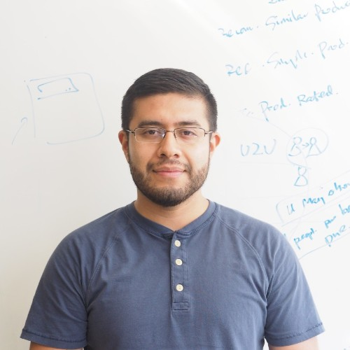
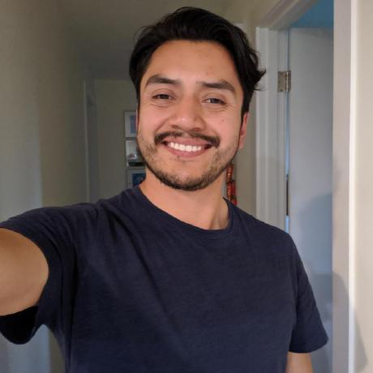

## Mauricio Laine
#### Software Developer / Android
{% include svg/github.svg alt="Visit Github Project" %}
Mauricio Laine is currently pursuing a Master's Degree in Computer Science & Engineering at the University of
Washington. Mauricio has been working in the field of mobile app development for the past five years. His current focus
is on machine learning mechanisms to identify objects in mobile applications.

## Oscar Guerrero
#### Software Developer / Android
{% include svg/github.svg alt="Visit Github Project" %}
Oscar Guerrero is a Master's student in the Paul G. Allen School of Computer Science and Engineering at the University
of Washington. Oscar has more than nine years of professional experience. Also, solid knowledge understanding mobile
native development tools and ample expertise developing native Android apps.